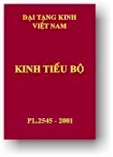

BuddhaSasana Home Page
This document is written in Vietnamese, with Unicode Times
font
|  | Ðại Tạng Kinh Việt Nam Tiểu Bộ Kinh -
Tập IV
|
Chuyện Tiền
Thân Đức Phật (I)
|
Lời Giới thiệuHòa thượng Thích Minh ChâuChúng tôi bắt đầu dịch tập Jàtaka (Bổn Sanh hay chuyện Tiền Thân) này, theo cách phân loại, đây là tập thứ 10 trong bộ Khuddaka Nikàya (Tiểu Bộ Kinh). Những Kinh đã được dịch là: Khuddakapàta (Tiểu Tụng, số 1); Dhammapada (Pháp Cú, số 2,); Udàna (Phật Tự Thuyết Kinh, số 3); Itivuttaka (Phật Thuyết Như Vậy, số 4); Suttanipàta (Kinh Tập, số 5); Theragàthà (Trưởng Lão Tăng Kệ, số 8); Therìgàthà (Trưởng Lão Ni kệ, số 9). Nay dịch tập Jàtaka (Bổn Sanh, số 10). Vì lần này, chúng tôi chỉ mới dịch 120 mẫu chuyện cho Tập I, nên con số chính xác có bao nhiêu mẫu chuyện trong toàn tập Jàtaka chưa được xác định. Theo tập Jàtaka bằng chữ Pàli, thời con số cuối cùng là 547 mẫu chuyện (Jàtaka I, trang 596). Nhưng, ở bản dịch tiếng Anh ghi là 550 chuyện, chia thành 22 chương (Nipàta). Phân loại này phần lớn dựa trên số kệ (gàthà) trong mỗi chuyện. Ví như chương một có 150 mẫu chuyện, mỗi mẫu chuyện có một bài kệ. Chương hai gồm 100 mẫu chuyện, mỗi mẫu chuyện có hai bài kệ. Chương ba, chương bốn, mỗi chương gồm 50 chuyện, mỗi chuyện có ba và bốn bài kệ. Cho đến chương hai mươi mốt có 5 câu chuyện, mỗi chuyện có 80 bài kệ. Chương hai mươi hai có 10 câu chuyện, với một số kệ nhiều hơn. Mỗi Jàtaka (Bổn Sanh) gồm có bốn phần: 1) PACCUPPANNA-VATTHU: Câu chuyện hiện tại, một câu chuyện được xem là xảy ra trong thời đức Phật tại thế, nên gọi là câu chuyện hiện tại, và vì câu chuyện này, đức Phật kể ra một câu chuyện quá khứ. 2) ATITAVATTHU: Câu chuyện quá khứ, có liên hệ đến những nhân vật trong câu chuyện hiện tại. Trong câu chuyện quá khứ, luôn luôn có sự hiện diện của Bồ Tát (là Tiền thân của đức Phật) trong một vai trò nào đó. Có một hay nhiều bài kệ, khi thì do Bồ Tát nói, khi thì do đức Phật nói, phần lớn dưới hình thức một bài dạy đạo đức. 3) VEYYÀKARANÀ: Giải thích bài kệ hay một vài danh từ trong câu chuyện quá khứ. 4) SAMODHÀNA: Phần kết hợp, Đức Phật kết hợp hai mẫu chuyện hiện tại và quá khứ, có khi thêm một bài thuyết pháp, kết quả của bài ấy và cuối cùng là phần nhận diện Bổn Sanh, chỉ rõ sự liên hệ giữa những nhân vật chính trong hai câu chuyện quá khứ và hiện tại. Theo truyền thống Tích Lan, câu chuyện hiện tại, câu chuyện quá khứ, lời giải thích và phần kết hợp gồm thành tập Jàtaka atthakathà (Bổn Sanh sớ giải). Tập này được dịch sang tiếng Singala (Tích Lan), trừ các bài kệ vẫn giữ tiếng Pàli. Tập Jàtaka Atthakathà bằng tiếng Singala (Tích Lan) lại được dịch qua tiếng Pàli với danh từ là Jàtakassa Atthavannanà, mà nay chúng tôi đang dịch ra tiếng Việt Nam. Truyền thống xem rằng chính Buddhaghosa đã dịch từ tiếng Singala ra tiếng Pàli, nhưng truyền thống này chưa được các học giả đồng ý. Chúng tôi không dịch Phần 3, Veyyàkaranà, vì phần này có tánh cách sớ giải. Vì chỉ mới dịch có 120 mẫu chuyện thành Tập I này, nên chúng tôi chỉ có thể dựa vào số 120 mẫu chuyện, này để phân tích và đưa đến một vài kết luận hay nhận xét cho riêng 120 mẫu chuyện mà thôi. Chỉ khi nào dịch xong toàn bộ, sẽ có những kết luận chung cho cả tập Jàtaka. Trước hết là nhận xét về trú xứ của câu chuyện hiện tại và câu chuyện quá khứ: Dựa theo những công trình của các vị học giả đã nghiên cứu trước, chúng nhận thấy các câu chuyện quá khứ được xảy ra phần lớn về phương Bắc và phương Tây nước Ấn Độ. Còn các câu chuyện hiện tại được xảy ra phần lớn về phương Đông Ấn Độ. Ví dụ, trong các câu chuyện quá khứ, Ba-La-Nại được đề cập đến 428 lần, Gadhàra 25 lần, còn trong câu chuyện hiện tại, Kosala được đề cập 428 lần và Magadha 58 lần (xem Jàtaka tập VII, trang VI). Riêng trong 120 mẫu chuyện hiện được phiên dịch, trong các câu chuyện hiện tại, Kỳ Viên được nói đến 83 lần, Trúc Lâm 10 lần, Xá Vệ 6 lần, v.v... Jàtaka hay Bổn Sanh là những mẫu chuyện diễn tả các đời sống trước (tiền thân) của đức Phật và danh từ dùng trong các câu chuyện quá khứ là Bồ Tát. Chúng ta phải xác nhận ở nơi đây, danh từ Bồ Tát trong các chuyện Bổn Sanh chỉ cho tiền thân của đức Phật trong những đời sống quá khứ, khi làm chư thiên, khi làm thú vật, khi làm vua, khi làm hoàng tử v.v... Trong các câu chuyện quá khứ, nhân vật nổi bật nhất luôn luôn là Bồ Tát, thường đóng vai trò linh động nhất hay quan trọng nhất Phân tích 120 câu chuyện quá khứ được dịch trong tập I này, chúng tôi xin ghi nhận nơi đây những vai trò Bồ Tát đã đóng như sau: * 26 lần Bồ Tát làm chim làm thú: 1 lần làm chó, 2 lần làm ngựa, 4 lần làm bò đực, 1 lần làm voi, 2 lần làm cá, 5 lần làm nai, 3 lần làm khỉ và 8 lần làm chim. Về các loài chim: ngỗng trời 1 lần, chim cút 3 lần, chim trĩ 1 lần, chim chúa 2 lần, chim bồ câu 1 lần. * Bồ Tát làm vua 6 lần, làm con vua 6 lần, làm đại thần 7 lần, làm triệu phú 10 lần, làm địa chủ 1 lần, làm Bà-La-Môn 4 lần, làm hiền trí 11 lần, làm Sư Trưởng 8 lần, làm ẩn sĩ 6 lần. * Bồ Tát hành nghề cũng rất rộng rãi và đa dạng: làm trưởng đoàn lữ hành 3 lần, làm nghề đi buôn 2 lần, làm người cày ruộng 1 lần, làm người đánh trống 1 lần, làm người thổi tù-và 1 lần, làm thầy thuốc 1 lần, làm thợ hớt tóc 1 lần, học nghề đoán sao, nghề nhào lộn 2 lần, làm con trai một gia đình 2 lần. Ngoài ra, chúng ta còn ghi nhận thêm: Bồ Tát làm chư thiên 5 lần, làm thần cây 8 lần. Đây chỉ nói đến 120 chuyện trong tập này thôi, chưa đề cập đến các mẫu chuyện còn lại. Nhìn chung, chúng ta cũng thấy vai trò của vị Bồ Tát thật là đa dạng, thật là phong phú, và vì đóng vai trò tiền thân đức Phật, phong cách đạo đức của Bồ Tát thật hoàn toàn tuyệt diệu từ lời nói, từ suy tư cho đến việc làm. Mỗi chuyện tiền thân có một bài kệ, phần lớn do Bồ Tát nói, có khi đức Phật nói. Những bài kệ này, có thể là một lời phê bình khi nhận xét những sự việc đã xảy ra, có khi là một lời cảnh cáo những nhân vật trọng yếu, sai trái, có khi là một lời khuyên giáo đạo đức, dựa trên câu chuyện đã xảy ra. Nghiên cứu các bài kệ này cũng là một nguồn cảm hứng đặc biệt, và các bài kệ được xem là phần cổ kính nhất của tập Bổn Sanh này. Phân tích 120 câu chuyện hiện tại trong Bổn Sanh này, chúng ta nhận thấy những đề tài được đề cập liên hệ trực tiếp với đức Phật, với các vị trưởng lão kế cận đức Phật, với các vị Tỳ-kheo, và một số cư sĩ liên hệ nhiều với đạo Phật. Ngoài ra, có đề cập những đề tài thông thường như đồ ăn cho người chết, lễ cúng dường khi cầu nguyện, các chòi lá bị cháy v.v... Đề tài sau này chiếm tỷ lệ rất thấp. Những đề tài liên hệ trực tiếp đến đức Phật như thần thông song hàn (số 29), Devadatta luôn luôn tìm cách hại Phật (số 11, 21, 26, 57, 58, 72, 113), nữ Bà-la-môn Cinca vu oan đức Phật số (120), đức Phật nhập Niết Bàn (số 95). Tiếp đến là một số Trưởng Lão thân cận với đức Phật như Ànanda (số 92, 95), Ràhula (số 167), Sàriputta (số 37, 69), Cullapanthaka (4), Laludàya (5) v.v... Tiếp đến nữa là đề cập đến một số Tỳ-kheo có các hạnh không được tốt đẹp và cần đức Phật giáo giới, đề tài này có thể nói là chiếm đa số. Như Tỳ-kheo thối thất tinh tấn (số 2, 3, 23, 24, 51, 52, 55), Tỳ-kheo có nhiều đồ vật (6, 32) Tỳ-kheo khó nói (15, 43, 48, 59, 60, 82, 104, 116), Tỳ-kheo bị ái luyến (30, 61, 63, 66, 85, 106), Tỳ-kheo nói khoác (80), Tỳ-kheo ném con ngỗng trời (107), Tỳ-kheo làm ồn phi thời (119), Tỳ-kheo uống nước không có lọc (31). Tiếp theo là các đề tài liên hệ đến các đệ tử cư sĩ, hoặc của đức Phật hay của các vị Trưởng lão. Cấp-Cô-Độc được nói đến khá nhiều (số 1, 40, 45, 83, 90, 103), đệ tử của Sàriputta (25, 39). Lại có một số đề tài có thể xem là không liên hệ đến đạo Phật, như đồ ăn cho người chết (số 18), lễ cúng dường khi cầu nguyện (19), làm lợi ích cho bà con (12), các chòi lá bị cháy (36), các cơn mộng (77) và đề tài liên hệ đến nữ nhân (61, 62, 63, 64, 65, 66, 67). Dựa trên các đề tài được đề cập trong các câu chuyện hiện tại, chúng ta có thể nói, những đề tài phần lớn đề cập đến Giáo hội Phật giáo trong thời đức Phật còn tại thế và khoảng 100 năm sau khi đức Phật nhập Niết Bàn, nhất là một số tệ trạng các Tỳ-kheo gặp phải, sau khi đạo Phật được truyền bá khắp xứ Ấn Độ và khi bậc Đạo Sư không còn nữa. Các đề tài và các mẫu chuyện cũng giúp chúng ta hiểu được một số nét về tình trạng xã hội đương thời. Chúng tôi phải gác một bên, không cho đăng một số mẫu chuyện về nữ nhân, có tánh cách châm biếm thái quán, và câu chuyện 16 giấc mộng, có tánh cách sấm ký, sợ bị hiểu lầm. Ở đây, một vấn đề phải được đặt ra là "Ai là tác giả các tập Jàtaka này?". Tuy Bộ này được phân loại vào Khuddaka Nikàya (Tiểu Bộ Kinh), tức là một trong năm tập Nikàya, Kinh Tạng, và mỗi câu chuyện đều được diễn tả như là đức Phật đã kể lại, chúng ta có những lý do xác đáng để khẳng định tác giả các tập này phải là các vị Tỳ-kheo, hoặc sống trong thời đức Phật, hoặc sau đó khoảng vài chục năm: vì chỉ có những vị này mới thông hiểu được tổ chức của Giáo hội và hiểu được những mẫu chuyện dân gian của Ấn Độ; vì chỉ những người am hiểu dân tình, đồng quê xứ sở Ấn Độ mới có thể ghi nhận và trình bày được. Bài giới thiệu không cho phép chúng tôi đi sâu vào vấn đề tác giả của các mẫu chuyện Bổn Sanh này. Nhưng căn cứ trên ngôn ngữ học, trên cách hành văn, trên các danh từ được dùng trong các câu chuyện, các giáo lý được đề cập, đức Phật được diễn tả, pháp môn được tu tập v.v..., chúng ta có những lý do để khẳng định tập Jàkata này mở một kỷ nguyên mới trong văn học Phật giáo và trong cung cách truyền bá đạo Phật, được xảy ra sau khi Phật nhập Niết Bàn. Tuy vậy, chúng ta phải xác nhận rằng nền văn học Phật giáo Jàtaka này đã tác dụng rất lớn, ảnh hưởng đến sự truyền bá đạo Phật, trong quá khứ cũng như trong hiện tại, ở Ấn Độ cũng như ngoài Ấn Độ, không những trong lãnh vực văn học mà còn lan đến lãnh vực nghệ thuật, kiến trúc, đời sống xã hội nhân dân, v.v... Trước hết, một số mẫu chuyện Jàtaka được khắc trên những tác phẩm điêu khắc tại các chùa, các tháp như ở Sanchi, ở Amaravati, đặc biệt Bharhut, Ấn Độ. Tại đấy, tên các Jàtaka được khắc rõ ràng. Ngày nay, một số công trình điêu khắc ấy vẫn còn được giữ khá nguyên vẹn tại các di tích Phật giáo Ấn Độ. Những công trình điêu khắc ấy chứng tỏ các câu chuyện tiền thân đã được biết đến rất nhiều vào thế kỷ thứ ba trước kỷ nguyên. Pháp Hiển, nhà chiêm bái Trung Quốc, khi đến thăm Tích Lan vào thế kỷ thứ tư sau kỷ nguyên, đã chứng kiến tại ngôi chùa Abhayagiri, sự trình diễn năm trăm chuyện tiền thân của đức Phật, khi Ngài còn là Bồ Tát, dưới hình thức con voi, con nai, v.v... Chúng tôi khi còn ở Tích Lan, nhân ngày Phật Đản có chứng kiến các tấm Pandal rất lớn, về các mẫu chuyện Jàtaka để dân chúng đến xem và chiêm ngưỡng. Và tại các Pandal ấy, có diễn xuất các vở kịch mẫu chuyện Jàtaka nữa. Vì vậy, ngày lễ Phật Đản ở Tích Lan là ngày mà rất đông dân chúng đi từ Pandal này qua Pandal khác, vừa dự lễ, vừa xem diễn các vở kịch về Jàtaka; dân chúng vui chơi một đêm trong ngày hội lớn. Các mẫu chuyện này cũng được dùng làm đề tài thuyết pháp trong các dịp lễ, dân chúng đến nghe suốt đêm, nghe các vị sư Tích Lan kể chuyện tiền thân Jàtaka mà không biết mệt. Một ảnh hưởng nữa mà các câu chuyện này đem lại, nhất là các mẫu chuyện về súc vật, nhiều khi vượt qua biên giới tôn giáo Ấn Độ và trở thành những chuyện cổ tích dân gian, nửa thần thoại, nửa thực tế, không lệ thuộc tôn giáo này hay xứ sở nào. Chúng tôi tin rằng có một số chuyện cổ tích Việt Nam được bắt nguồn từ những chuyện Jàtaka này như chuyện Tấm Cám chẳng hạn. Những mẫu chuyện cổ tích này đã trở thành gia tài chung của nền văn hóa dân gian, phản ảnh được những tính chất bình thường của dân chúng, dưới mọi chân trời, trong đời sống hằng ngày của dân chúng, khi phải tiếp xúc với những gì hay, hoặc xấu của cuộc đời. Chính vì vậy mà các tập Jàtaka này rất được phổ biến, không những trong giới Phật tử mà còn lan tràn khắp mọi địa phương, mọi dân tộc. Tập Jàtaka có khoảng năm trăm năm mươi mẫu chuyện. Nay mới dịch xong tập I với một trăm hai mươi mẫu chuyện. Như vậy còn lại khoảng bốn trăm ba mươi chuyện, sẽ được tiếp tục dịch và dự tính mất hai năm mới xong. Qua việc dịch tập Jàtaka, chúng tôi gặp phải một thể văn hoàn toàn sai khác với các bản Nikàya, danh từ khác lạ, rất phong phú, rất nhiều chữ mới. Đó là thể văn kể chuyện, trực tiếp ghi chép các cuộc đối thoại, nên vừa dài vừa linh động, dịch cho gọn và cho sát với nguyên bản thật là cả một vấn đề. Chúng tôi muốn nói thêm về mục đích phiên dịch kinh Tạng Pàli ra tiếng Việt. Từ Ấn Độ về nước vào năm 1964, chúng tôi bắt tay phiên dịch ngay hai bộ Màjjhima Nikàya (Trung Bộ Kinh) và Dìgha Nikàya (Trường Bộ Kinh) cho đến năm 1975 mới dịch xong. Từ năm 1975 đến 1978, chúng tôi dịch xong hai bộ Samgutta Nikàya (Tương Ưng Bộ Kinh) và Anguttara Nikàya (Tăng Chi Bộ kinh). Từ năm 1978, chúng tôi bắt đầu dịch bộ Khuddaka Nikàya (Tiểu Bộ Kinh) và cho đến nay, đã dịch được sáu tập trong mười lăm tập, đang dịch tập Jàtaka thứ bảy. Dịch xong Jàtaka, chúng tôi tự xem là dịch xong Kinh Tạng Pàli, số tập còn lại trong Tiểu Bộ Kinh xin nhường lại cho các vị khác. Còn chúng tôi dự định duyệt lại các bộ Nikàya đã phiên dịch, thống nhất lại các danh từ chuyên môn, thống nhất lại các đoạn văn tương đương, hiệu đính lại các đoạn văn, các danh từ sai lầm, cố gắng hoàn thành cho được tốt đẹp những công trình phiên dịch của chúng tôi. Chúng tôi phiên dịch Kinh Tạng Pàli hướng về hai mục đích rõ rệt: 1) Mục đích thứ nhất là giới thiệu Kinh Tạng Pàli cho Phật tử và cho nhân dân Việt Nam, những nguyên bản kinh điển được xem là cổ xưa nhất và chứa đựng những giáo lý trung thành nhất của đức Phật. Đức Phật dạy các Phật tử hãy học giáo lý của Ngài trong ngôn ngữ của mình. Phật tử Việt Nam, tất nhiên phải học giáo lý của Ngài ngang qua tiếng Việt, và nhờ vậy Phật tử Việt Nam vượt qua được những trở ngại ngôn ngữ và tự mở rộng cửa chánh pháp và cho mình và cho mọi người. Chúng tôi phiên dịch Kinh Tạng vì chúng tôi xem Kinh Tạng gìn giữ được những lời dạy trung thành nhất của đức Phật chưa bị ảnh hưởng bởi những chia rẽ hệ phái và tông phái (Nam tông, Bắc tông). 2) Mục đích thứ hai của chúng tôi trong nhiệm vụ phiên dịch này là xây dựng cho được một Đại Tạng Việt Nam. Ngày nay, chúng ta đã được độc lập thống nhất, chúng ta phải có Đại Tạng Việt Nam cho Phật tử Việt Nam. Ngôn ngữ Việt Nam đủ phong phú, đủ trong và sức mạnh đóng vai trò chuyển ngữ. Ngày nào, chúng ta còn lệ thuộc vào Pàli Tạng hay Hán Tạng v.v... ngày ấy, chúng ta vẫn còn lệ thuộc những văn tự ấy. Độc lập ngôn ngữ cũng có nghĩa là độc lập dân tộc. Xưa kia, ông cha ta đề cao tiếng Nôm là cũng vì vậy, vì chỉ có độc lập ngôn ngữ mới khỏi bị đồng hóa bởi văn hóa ngoại bang. Chúng ta đang cần nghiên cứu Pàli Tạng và Hán Tạng nhưng nghiên cứu không có nghĩa là cam tâm lệ thuộc vào văn tự Pàli hay văn tự Hán Tạng. Điều cốt yếu là thấy rõ điều ấy, và thấy rõ điều ấy cũng tức là thấy được sự cần thiết phải xây dựng cho được một Đại Tạng Việt Nam. Viết tại Viện Phật Học Vạn
Hạnh trong mùa An Cư năm 1980, Tỷ Kheo THÍCH MINH CHÂU -ooOoo- Đầu trang | Mục lục | 01 | 02 | 03 | 04 | 05 | 06 | 07 | 08 | 09 | 10 | 11 | 12 |
Chân thành cám ơn anh HDC đã có
thiện tâm giúp tổ chức đánh máy vi tính (B. Anson, 05/2002).
Chân thành cám ơn anh NQ đã giúp dò soát (B. Anson, 02/2004).
[Mục lục Tiểu Bộ][Thư Mục Tổng Quát]
last updated: 28-02-2004